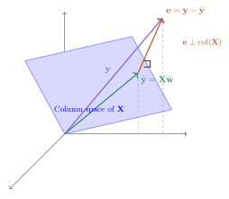
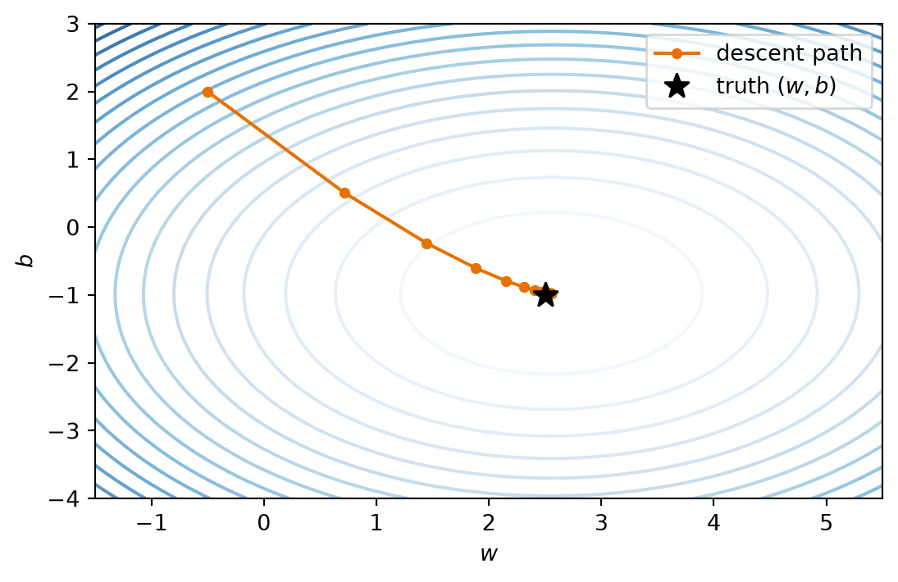
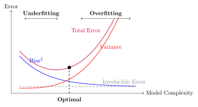
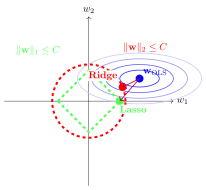

The core task of everything we will do in this course is to teach a computer to learn a function from examples. Before we can appreciate what is deep about deep learning, we need one complete, honest example of learning — a model, a loss, and a way to improve. Linear regression is that example. It is the smallest model that contains the entire supervised learning story, and by the end of this chapter we will have built it three times: once in closed form, once by gradient descent, and once the way you will build everything else in this book — with PyTorch modules. All three will agree, and you will know exactly why.
where each \(\vect{x}_i \in \R^d\) is an input with \(d\) features and \(y_i\) is the desired output — the supervision signal. Stack the inputs as rows and you get the data matrix \(\matr{X} \in \R^{n \times d}\): \(n\) samples down, \(d\) features across, with the targets collected in a vector \(\vect{y}\).
Our goal is a flexible function \(f\) such that
\[
f(\vect{x}_i) \approx y_i \quad \text{and, crucially, } f \text{ generalizes to unseen data.}
\]
That second clause is the whole game. We do not care how well \(f\) recites the training examples; we care how it behaves on a new \(\vect{x}\) it has never seen — one drawn from the same distribution as the training data.
NoteSupervised learning, three flavors
The range of \(y\) decides the task and, as we will see, the natural loss:
Task
Range of \(y\)
Typical loss
Regression
\(\R\)
Mean squared error
Classification
\(\{0, \dots, C-1\}\)
Cross-entropy
Structured prediction
sequences, images, graphs
task-specific
This chapter is regression; Chapter 2 handles classification with the same machinery.
Why is this hard?
This task sounds simple, but it is fundamentally hard: for any finite set of examples, there are infinitely many functions that fit them perfectly. We want the one that is most suited to our problem \(\rightarrow\) the learning algorithm needs a nudge in the right direction. That guiding assumption is called its inductive bias, and it is a thread we will pull on for the rest of the book.
A linear model has a strong bias: it assumes the world is linear. Simple and stable, but systematically wrong when the data is not linear (high bias, low variance).
A deep neural network has a weak bias. Its flexibility lets it learn complex patterns, but it can memorize the training data instead of the underlying rule (low bias, high variance). Some networks can memorize an entire training set — and then perform poorly the day you deploy them.
The key to modern deep learning is to use a flexible model and fight overfitting with data, regularization, and (the deepest idea of all) inductive biases matched to the task. That last idea gets its own chapter (Chapter 6).
To make any of this concrete, we parameterize a family of functions \(f_{\vect{w}}\) by a set of tuning parameters \(\vect{w}\) — think of each parameter as a knob. Learning is finding a good setting \(\hat{\vect{w}}\) of the knobs; inference is using \(f_{\hat{\vect{w}}}\) to predict on unseen data. That is the vocabulary we will use all course.
1.2 The linear model and its geometry
Linear regression assumes a linear relationship:
\[
y = \vect{w}^\top \vect{x} + b .
\]
Geometrically, \(\vect{w}\) sets the orientation (the slope) of a hyperplane, and the bias \(b\) shifts it away from the origin. In two dimensions this is the familiar line through a scatter of points; in \(d\) dimensions it is a \(d\)-dimensional plane, but nothing about the algebra changes.
There is a second way to read \(\vect{w}^\top\vect{x}\), and it may be the most important sentence in this chapter: a dot product is a similarity score. It is large and positive when \(\vect{x}\) points along \(\vect{w}\), near zero when they are unrelated, and negative when they oppose. So a linear model is a pattern matcher: \(\vect{w}\) is a template, and the output measures how well the input matches it. Keep this reading close at hand. In Part II, an image filter’s response will be this same dot product slid across an image; in Part IV, attention will be built out of nothing but learned similarity scores between queries and keys. Both are this one primitive, asked the question we will ask all book long: what if the template were learnable?
The augmentation trick
Carrying \(b\) separately clutters the algebra, so we will often fold it into the weights: append a column of ones to the data matrix, making \(\matr{X} \in \R^{n \times (d+1)}\), and append \(b\) to the weight vector, making \(\vect{w} \in \R^{d+1}\). Then
\[
y = \vect{w}^\top \vect{x} \qquad \text{(bias included)}.
\]
Whenever you see a linear model written without a bias — here or inside a neural network — the bias has not disappeared; it is living inside \(\vect{w}\).
1.3 The loss: what makes a hyperplane “bad”?
To find the best hyperplane we must first quantify error. The standard choice for regression is the mean squared error (MSE):
The loss is the guiding principle of training: it is how we tell the model you are a bad model, and here is by how much; the model then has to find a way to improve. The choice of loss is not arbitrary, and we will justify this one honestly at the end of the chapter.
TipThe first “make it learnable” seed
Look closely at \(y = \vect{w}^\top\vect{x} + b\). A single neuron in a neural network computes exactly this, followed by a nonlinear squashing function \(\sigma(\vect{w}^\top\vect{x} + b)\). Linear regression is a neuron with the identity activation. Everything we learn here — loss, gradients, optimization — transfers directly. The rest of this book is, in a precise sense, the story of what happens when we take this fixed, simple recipe and progressively let more of it be learned.
1.4 Finding the best weights, method 1: solve it exactly
For this one special problem we can find the exact minimizer. Set the gradient of Equation 1.1 to zero and you get the normal equations:
There is a picture behind this formula worth carrying for the rest of your career. Our predictions \(\hat{\vect{y}} = \matr{X}\vect{w}\) can only ever live in the column space of \(\matr{X}\) — the span of its feature columns. If the true \(\vect{y}\) lies outside that space (it almost always does), the best we can do is project\(\vect{y}\) onto it. The leftover error \(\vect{e} = \vect{y} - \hat{\vect{y}}\) is what our model cannot explain, and at the optimum it is perpendicular to the column space — no adjustment of the knobs can reduce it further.
One more observation to file away: substituting Equation 1.2 back in gives \(\hat{\vect{y}} = \matr{X}(\matr{X}^\top\matr{X})^{-1}\matr{X}^\top\vect{y}\), so the fitted predictions are a weighted combination of the training targets\(\vect{y}\). Linear regression predicts by mixing the answers it has already seen. Hold that thought: in Part IV an entire architecture — attention — grows out of choosing such mixing weights by similarity.

Figure 1.1: The normal equations, geometrically: the optimal prediction \(\hat{\vect{y}} = \matr{X}\hat{\vect{w}}\) is the projection of \(\vect{y}\) onto the column space of \(\matr{X}\); the residual \(\vect{e}\) is orthogonal to it.
Elegant. So why is this formula almost absent from deep learning? Two reasons. Solving it costs \(O(d^3)\), which is hopeless when \(d\) runs to millions or billions. And it only exists because the model is linear; the moment we add a nonlinearity, there is no closed form to solve. Our datasets are large and our models are not linear \(\rightarrow\) we have neither luxury. We need another way.
1.5 Finding the best weights, method 2: walk downhill
Here is the geometric intuition. Picture the loss as a landscape over the parameter space, and imagine standing on it blindfolded, trying to find the lowest valley. You cannot see the valley, but you can feel the slope under your feet. So you feel the slope, take a small step downhill, and repeat.
The mathematical form of this hill-descending intuition is gradient descent:
where the learning rate\(\eta\) sets the step size. For the MSE loss the gradient has a clean closed form — with \(\matr{X} \in \R^{n\times d}\), \(\vect{w} \in \R^{d}\), and \(\vect{y} \in \R^{n}\):
import torchimport numpy as npimport matplotlib.pyplot as plttorch.manual_seed(6050)x1 = torch.randn(60)y1 =2.5* x1 -1.0+0.3* torch.randn(60) # truth: w = 2.5, b = -1.0def mse(w, b): # loss surface over (w, b)return ((y1 - (w * x1 + b)) **2).mean()w, b, path =-0.5, 2.0, [] # start far from the valleyfor _ inrange(20): path.append((w, b)) err = (w * x1 + b) - y1 # feel the slope... w -=0.25*float(2* (err * x1).mean()) # ...step downhill b -=0.25*float(2* err.mean())W, B = np.meshgrid(np.linspace(-1.5, 5.5, 100), np.linspace(-4, 3, 100))L = np.vectorize(lambda wi, bi: float(mse(wi, bi)))(W, B)plt.figure(figsize=(5.8, 3.8))plt.contour(W, B, L, levels=25, cmap="Blues", alpha=0.8)pw, pb =zip(*path)plt.plot(pw, pb, "o-", color="#E57200", ms=4, lw=1.5, label="descent path")plt.plot(2.5, -1.0, "k*", ms=12, label="truth $(w, b)$")plt.xlabel("$w$"); plt.ylabel("$b$"); plt.legend()plt.tight_layout()plt.show()

Figure 1.2: The blindfolded walk, made visible: gradient descent on the MSE landscape of a tiny one-feature problem. Each step follows the slope felt at the current point; steps shrink as the valley floor flattens.
This iterative loop (predict \(\rightarrow\) measure the loss \(\rightarrow\) feel the gradient \(\rightarrow\) step) is exactly what modern deep learning frameworks automate, at billion-parameter scale. When the dataset itself is huge we will not even use all of it per step: a small random batch gives a good-enough gradient. That refinement (stochastic gradient descent) matters enough to get its own treatment in Chapter 4.
1.6 Build it three times
Enough theory: let us implement linear regression, and let us do it in PyTorch. You have already built this in NumPy in earlier courses, so we will use it as an excuse to get comfortable with tensors, while still doing everything from scratch.
TipCoding hygiene
Two habits worth forming from the very first cell: fix your seeds so runs are reproducible, and annotate your functions with types — not critical for Python to run, but it makes code readable and debugging far easier.
Code
import torchimport matplotlib.pyplot as plttorch.manual_seed(6050) # reproducible runs, always
<torch._C.Generator at 0x1221107d0>
First, synthetic data. We control the ground truth (the true weights and bias), so we can check whether each method actually recovers them.
Code
def make_synthetic_data( weights: torch.Tensor, bias: float, n_samples: int, noise: float=0.1) ->tuple[torch.Tensor, torch.Tensor]:"""y = Xw + b + noise. Returns X: (n, d) and y: (n,).""" X = torch.randn(n_samples, len(weights)) y = X @ weights + bias + noise * torch.randn(n_samples)return X, ytrue_w, true_b = torch.tensor([2.0, -3.4]), 4.2X, y = make_synthetic_data(true_w, true_b, n_samples=200)X.shape, y.shape # always check your shapes
(torch.Size([200, 2]), torch.Size([200]))
Take 1: the closed form
The normal equations, Equation 1.2, on the augmented matrix (the column of ones carries the bias):
Code
X_aug = torch.cat([X, torch.ones(X.shape[0], 1)], dim=1) # (n, d+1)w_ols = torch.linalg.solve(X_aug.T @ X_aug, X_aug.T @ y) # solve, don't invertprint(f"closed form: w = {w_ols[:2].numpy().round(3)}, b = {w_ols[2]:.3f}")print(f"ground truth: w = {true_w.numpy()}, b = {true_b}")
closed form: w = [ 2.01 -3.402], b = 4.196
ground truth: w = [ 2. -3.4], b = 4.2
Two lines, and we recover the truth up to the noise floor. Remember what this cost us: \(O(d^3)\), and the special grace of a linear model. Now the method that scales.
Take 2: gradient descent, from scratch
We write the model as a small class: a forward pass, manually derived gradients (Equation 1.4), and an update step. No autograd yet; we want to feel the mechanics once with our own hands.
Code
class LinearRegressionScratch:"""Linear regression trained with manually derived gradients."""def__init__(self, input_size: int, lr: float=0.1):self.w =0.01* torch.randn(input_size)self.b = torch.zeros(1)self.lr = lrdef forward(self, X: torch.Tensor) -> torch.Tensor:return X @self.w +self.bdef step(self, X: torch.Tensor, y: torch.Tensor) ->float: err =self.forward(X) - y # 1. predict, 2. measure (n,)self.w -=self.lr *2* X.T @ err /len(y) # 3. feel the slope,self.b -=self.lr *2* err.mean() # 4. step downhillreturnfloat((err **2).mean())model = LinearRegressionScratch(input_size=2)losses = [model.step(X, y) for _ inrange(100)]print(f"gradient descent: w = {model.w.numpy().round(3)}, b = {model.b.item():.3f}")
Figure 1.3: The loss falls fast at first — steep slope underfoot — then flattens as we approach the valley floor set by the irreducible noise.
Take 3: the framework way
Finally, the idiom you will use for every model from here on: nn.Linear holds the knobs, autograd feels the slope for us, and the optimizer takes the step.
Code
from torch import nnnet = nn.Linear(in_features=2, out_features=1)optimizer = torch.optim.SGD(net.parameters(), lr=0.1)loss_fn = nn.MSELoss()for _ inrange(100): optimizer.zero_grad() # clear old gradients: they accumulate! loss = loss_fn(net(X).squeeze(-1), y) # (n, 1) -> (n) loss.backward() # autograd feels the slope for us optimizer.step()w_nn = net.weight.detach().squeeze()b_nn = net.bias.item()print(f"nn.Linear: w = {w_nn.numpy().round(3)}, b = {b_nn:.3f}")
Figure 1.4: All three methods find the same line (shown against feature \(x_1\), second feature at its mean).
1.7 Why squared error? The maximum-likelihood view
The MSE is not an arbitrary choice. Assume the data really is generated by a linear process plus Gaussian noise:
\[
y = \vect{w}^\top\vect{x} + b + \epsilon, \qquad \epsilon \sim \mathcal{N}(0, \sigma^2).
\]
Then the probability of seeing output \(y\) given input \(\vect{x}\) is a Gaussian centered on the model’s prediction. Maximum likelihood estimation asks: which parameters make the observed data most likely? Take the log of the likelihood over all \(n\) samples and the Gaussian’s exponent comes down:
\[
\log \mathcal{L}(\vect{w}, b)
= C - \frac{1}{2\sigma^2}\sum_{i=1}^{n}\bigl(y_i - (\vect{w}^\top\vect{x}_i + b)\bigr)^2 .
\]
Maximizing the log-likelihood is exactly minimizing the sum of squared errors. The loss encodes an assumption about the noise. This is a pattern to remember: when we meet cross-entropy in Chapter 2, it will be the same story with a different distribution.
1.8 A first look at bias and variance
Our learned \(\hat{\vect{w}}\) depends on the training data, and the training data is a random sample. Collect a fresh dataset and you get a different \(\hat{\vect{w}}\). So the model’s expected error on a new point decomposes into three parts:
Bias measures how far the average prediction is from the truth, because of limiting assumptions like linearity: a simple model on complex data is systematically wrong (underfitting). Variance measures how much the prediction would change if we collected a fresh training set (the model’s sensitivity to sampling noise); a complex model can fit the noise itself (overfitting). The irreducible noise is inherent to the data-generating process and cannot be learned away.

Figure 1.5: The classical picture: as model complexity grows, bias falls while variance rises; total error is U-shaped, with sweet spots between under- and overfitting.
This is why we split data into training, validation, and test: the model sees the training set, the validation set referees the bias–variance trade-off, and the test set stays untouched until the end.
WarningThe U-shaped curve is a cartoon, not a law of nature
The textbook picture, validation error falling then rising as complexity grows, is a helpful first mental model, and you should have it. But bias and variance are not a mechanical see-saw. More data shrinks variance (at a rate of roughly \(1/n\), while leaving bias untouched); regularization, and inductive biases matched to the task, can buy capacity without exploding variance. Modern over-parameterized networks live in regimes where this cartoon bends in surprising ways — we will look at those pictures properly in Chapter 6.
Regularization, briefly
One lever we can pull right now: penalize complexity in the loss itself. Ridge regression adds an \(L_2\) penalty,
nudging the model toward smaller, more stable weights: a little more bias for a lot less variance.
Let us see that, not just assert it. We build a problem designed to punish an unregularized model: 20 features of which only 5 matter, noisy targets, and (the cruel part) barely more samples than parameters. This is exactly the regime where variance explodes and regularization shines:
OLS, with all its freedom and almost no data to discipline it, assigns large, confident, wrong weights to the 15 noise features — pure variance. Ridge shrinks everything and cuts the damage several-fold: a little bias, traded for a lot of variance. (Rerun this cell with n = 100 and watch OLS become respectable again: variance decays like \(1/n\).) Ridge’s \(L_1\) cousin, lasso, can go further and zero out the irrelevant features entirely; we leave it to the exercises, because on the road ahead it is weight decay, the \(L_2\) idea, that you will meet again and again.

Figure 1.6: Why the penalties behave differently: minimizing the loss subject to a weight budget. The spherical \(L_2\) budget shrinks the solution toward the origin; the diamond-shaped \(L_1\) budget has corners on the axes, so the solution tends to land where some coordinates are exactly zero (Exercise 6).
1.9 Okay, so — what did we just build?
We taught a computer a function from examples, completely:
A model family — hyperplanes, parameterized by knobs \(\vect{w}, b\) (with the augmentation trick to fold \(b\) into \(\vect{w}\)).
A loss — MSE, which is maximum likelihood under Gaussian noise; the loss is how we tell the model how bad it is.
An optimizer — the exact projection when linearity permits, and gradient descent (feel the slope, step downhill) when it does not, which is always from here on.
The generalization lens — bias vs. variance, the data splits that referee them, and regularization as a first counter-measure to overfitting.
And one reframing that will carry the whole book: linear regression is a single neuron with the identity activation,
First, in Chapter 2, that squashing function turns our regressor into a classifier. Then, in Chapter 3, we stack neurons — and discover why the nonlinearity is not optional.
Exercises
(Pencil.) Derive the normal equations Equation 1.2 by expanding \(\norm{\vect{y}-\matr{X}\vect{w}}_2^2\), taking the gradient with respect to \(\vect{w}\), and setting it to zero. Where exactly does the assumption that \(\matr{X}^\top\matr{X}\) is invertible enter?
(Pencil.) Repeat the derivation with the ridge penalty \(\lambda\norm{\vect{w}}_2^2\) and show the solution becomes \((\matr{X}^\top\matr{X} + \lambda I)^{-1}\matr{X}^\top\vect{y}\). Why does the \(\lambda I\) term guarantee invertibility for any \(\lambda > 0\)?
(Code.) In make_synthetic_data, raise noise to 1.0 and rerun all three implementations 10 times with different seeds. How much do the learned weights vary across runs? Which term of Equation 1.5 are you watching?
(Code.) Set the learning rate in LinearRegressionScratch to 1.0 and rerun. Describe what the loss curve does, and explain it using the blindfolded-descent picture.
(Code.) In the ridge experiment, sweep \(\lambda \in \{0.01, 0.1, 1, 10, 100\}\) and plot weight MSE against \(\lambda\). Where is the sweet spot, and what happens at the extremes? Connect your answer to bias and variance.
(Code.)Lasso. Replace the ridge penalty with the \(L_1\) norm \(\lambda\norm{\vect{w}}_1\). There is no closed form — use sklearn.linear_model.Lasso(alpha=0.4) on the same data and count how many weights land exactly at zero. Compare with ridge: why can a diamond-shaped penalty zero out coordinates when a spherical one cannot?